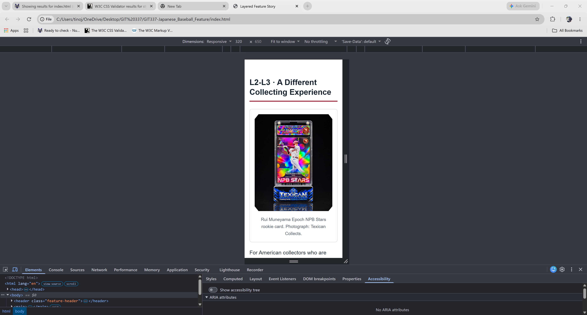
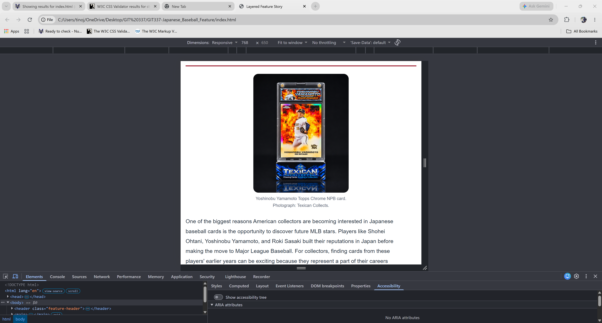
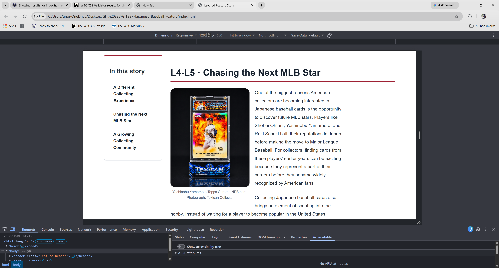
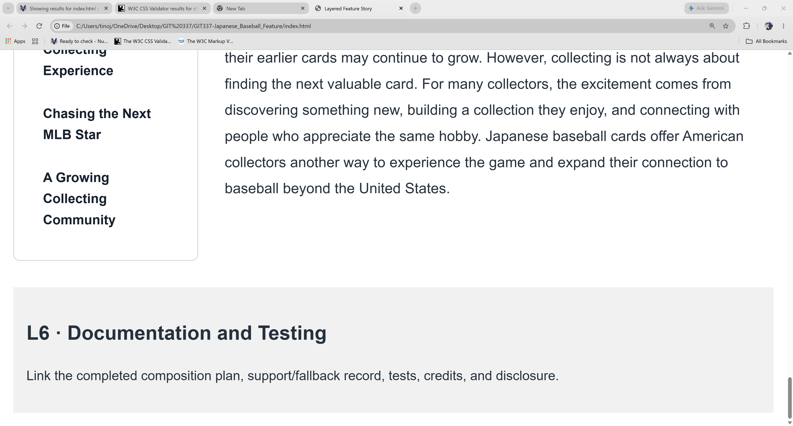
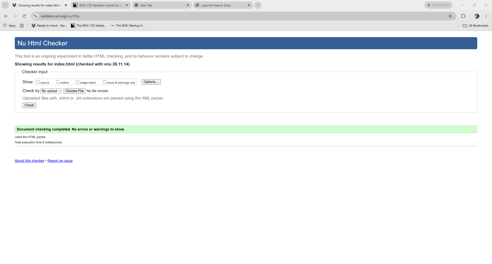
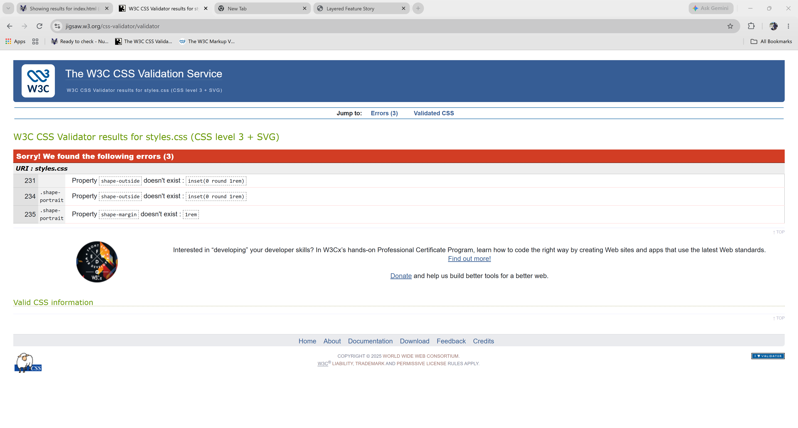

Project: Beyond the Diamond - Japanese Baseball Card Collecting
Testing performed in Firefox using responsive design mode and browser developer tools.
| Test | Result | Notes |
|---|---|---|
| 320px viewport | Passed visual review | Images, captions, headings, and navigation fit the narrow layout. |
| 768px viewport | Passed | Navigation stacks above the article. The Yamamoto photograph was centered for improved presentation. |
| 1280px viewport | Passed visual review | Grid columns and text wrapping display correctly. |
| 200% browser zoom | Corrected and retested | A sticky sidebar overlap was found. Adding the story-layout container corrected the issue. |
| Keyboard navigation | Passed | Navigation links can receive focus and activate their section links. |
| CSS-disabled reading order | Passed | CSS was temporarily disabled using Firefox Developer Tools. The article maintained a logical reading order, including headings, paragraphs, images, captions, navigation, and documentation. |
| Clip-path fallback | Passed | The Muneyama photograph remains visible when clipping is disabled. |
| Shape-outside fallback | Passed normal-flow test | Disabling the float restores the Yamamoto figure to normal flow. Removing shape-outside alone produced little visible difference. |
| Long-title test | Passed | The extended title wrapped without interfering with the header badge. |
| Content-growth test | Completed | A paragraph was duplicated to examine layout behavior and then restored. |
| HTML validation | Passed | W3C Nu HTML Checker reported zero errors and zero warnings. |
| CSS validation | Reviewed | The W3C CSS3 profile reported three CSS Shapes property errors. CSS Portal initially reported zero errors and one deprecation warning. The deprecated declaration was replaced. |
The following screenshots document responsive layouts, browser zoom, and code validation.





